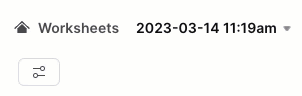

Overview
Welcome to the Powered by Tasty Bytes - Zero to Snowflake Quickstart focused on Geospatial Analysis!
Within this Quickstart we will conduct in-depth Geospatial analysis leveraging powerful Snowflake functionality coupled with a SafeGraph POI listing from the Snowflake Marketplace.
Prerequisites
- Before beginning, please make sure you have completed the Introduction to Tasty Bytes Quickstart which provides a walkthrough on setting up a trial account and deploying the Tasty Bytes Foundation required to complete this Quickstart.
What You Will Learn
- How to Access the Snowflake Marketplace
- How to Acquire SafeGraph POI Data from the Snowflake Marketplace
- How to Create a View
- How to Create a Geography Point
- How to Calculate Distance between Points
- How to Collect Points
- How to Draw a Minimum Bounding Polygon and Calculate its Area
What You Will Build
- An Analytics Ready View Complete with First and Third Party Data
- An Understanding of How to Conduct Geospatial Analysis in Snowflake
Overview
Within this Quickstart we will follow a Tasty Bytes themed story via a Snowsight SQL Worksheet with this page serving as a side by side guide complete with additional commentary, images and documentation links.
This section will walk you through logging into Snowflake, Creating a New Worksheet, Renaming the Worksheet, Copying SQL from GitHub, and Pasting the SQL we will be leveraging within this Quickstart.
Step 1 - Accessing Snowflake via URL
- Open a browser window and enter the URL of your Snowflake Account
Step 2 - Logging into Snowflake
- Log into your Snowflake account.

Step 3 - Navigating to Worksheets
- Click on the Worksheets Tab in the left-hand navigation bar.

Step 4 - Creating a Worksheet
- Within Worksheets, click the "+" button in the top-right corner of Snowsight and choose "SQL Worksheet"

Step 5 - Renaming a Worksheet
- Rename the Worksheet by clicking on the auto-generated Timestamp name and inputting "Tasty Bytes - Geospatial"
- 
Step 6 - Accessing Quickstart SQL in GitHub
- Click the button below which will direct you to our Tasty Bytes SQL file that is hosted on GitHub.
tb_zts_geospatial.sql
Step 7 - Copying Setup SQL from GitHub
- Within GitHub navigate to the right side and click "Copy raw contents". This will copy all of the required SQL into your clipboard.

Step 8 - Pasting Setup SQL from GitHub into your Snowflake Worksheet
- Path back to Snowsight and your newly created Worksheet and Paste (CMD + V for Mac or CTRL + V for Windows) what we just copied from GitHub.
Step 9 - Click Next –>
Overview
Tasty Bytes operates Food Trucks in numerous cities and countries across the globe with each truck having the ability to choose two different selling locations per day.
One important item that our Executives are interested in is to learn more about how these locations relate to each other as well as if there are any locations we currently serve that are potentially too far away from hot selling city centers.
Unfortunately what we have seen so far is our first party data does not give us the building blocks required to complete this sort of Geospatial analysis. Thankfully, the Snowflake Marketplace has great listings from SafeGraph that can assist us here.
Step 1 - Using First Party Data to Find Top Selling Locations
Before we leverage the Snowflake Marketplace to access SafeGraph Point of Interest data, please execute our first three queries which will set our Role and Warehouse context to tasty_data_engineer and tasty_de_wh and find the Top 10 Selling Locations for Paris in 2022.
In our third query we will see the usage of TOP, SUM and YEAR functions.
USE ROLE tasty_data_engineer;
USE WAREHOUSE tasty_de_wh;
SELECT TOP 10
o.location_id,
SUM(o.price) AS total_sales_usd
FROM frostbyte_tasty_bytes.analytics.orders_v o
WHERE 1=1
AND o.primary_city = 'Paris'
AND YEAR(o.date) = 2022
GROUP BY o.location_id
ORDER BY total_sales_usd DESC;
While it is great to get these top selling locations for Paris, we need more Point of Interest data to really derive any insights.
Step 2 - Acquiring SafeGraph POI Data from the Snowflake Marketplace
Please follow the steps and video below to access this listing in your Snowflake Account.
- Click -> Home Icon
- Click -> Marketplace
- Search -> frostbyte
- Click -> SafeGraph: frostbyte
- Click -> Get
- Rename Database -> FROSTBYTE_SAFEGRAPH (all capital letters)
- Grant to Additional Roles -> PUBLIC

Step 3 - Evaluating SafeGraph POI Data
Now that we have the frostbyte_safegraph database live in our account, let's run the next query to initially see what sort of data they have available for Paris.
SELECT
cpg.placekey,
cpg.location_name,
cpg.longitude,
cpg.latitude,
cpg.street_address,
cpg.city,
cpg.country,
cpg.polygon_wkt
FROM frostbyte_safegraph.public.frostbyte_tb_safegraph_s cpg
WHERE 1=1
AND cpg.top_category = 'Museums, Historical Sites, and Similar Institutions'
AND cpg.sub_category = 'Museums'
AND cpg.city = 'Paris'
AND cpg.country = 'France';
Amazing! These sort of POI metrics will be immensely valuable in conducting Geospatial analysis to assist our Executives in making data driven location decisions.
Let's get this harmonized with our Sales data in the next section.
Step 4 - Click Next –>
Overview
To make our Geospatial analysis seamless, let's make sure to get SafeGraph POI data included in the analytics.orders_v so all of our downstream users can also access it.
Step 1 - Enriching our Analytics View
Please execute this steps two queries which will first set our Role context to sysadmin and then enrich our analytics.orders_v by adding all available, new SafeGraph POI metrics.
Within this CREATE VIEW statement, you will see COMMENT, DATE and SELECT * EXCLUDE .. functionality leveraged.
To highlight what our EXCLUDE is doing we are using it to simplify the SQL required to SELECT all of the available SafeGraph columns but not the ones we already have available in the harmonized.orders_v.
CREATE OR REPLACE VIEW frostbyte_tasty_bytes.analytics.orders_v
COMMENT = 'Tasty Bytes Order Detail View'
AS
SELECT
DATE(o.order_ts) AS date,
o.* ,
cpg.* EXCLUDE (location_id, region, phone_number, country)
FROM frostbyte_tasty_bytes.harmonized.orders_v o
JOIN frostbyte_safegraph.public.frostbyte_tb_safegraph_s cpg
ON o.location_id = cpg.location_id;
Step 2 - Click Next –>
Overview
With Point of Interest metrics now readily available from the Snowflake Marketplace without any ETL required, let's start on our Geospatial analysis journey.
Step 1 - Creating a Geography Point
Latitude and Longitude are two building block POI metrics we now have access to thanks for SafeGraph.
Please execute the next two queries to re-assume to tasty_data_engineer role and create our Geography Point leveraging the ST_MAKEPOINT/ST_POINT function.
USE ROLE tasty_date_engineer;
SELECT TOP 10
o.location_id,
ST_MAKEPOINT(o.longitude, o.latitude) AS geo_point,
SUM(o.price) AS total_sales_usd
FROM frostbyte_tasty_bytes.analytics.orders_v o
WHERE 1=1
AND o.primary_city = 'Paris'
AND YEAR(o.date) = 2022
GROUP BY o.location_id, o.latitude, o.longitude
ORDER BY total_sales_usd DESC;
While it isn't the prettiest result set we have ever seen, the results we see in the geo_point column are going to be essential for everything else we do moving forward.
One thing to note here is despite typically hearing Latitude then Longitude this function requires these values to be input in the Longitude, Latitude order.
Step 2 - Calculating Distance Between Locations
Starting with our Geographic Point, we can now begin to dive into some of the powerful Geospatial functions Snowflake offers natively.
Let's first start with calculating the distances in Miles and Kilometers between those top selling locations we generated previously by executing our next query which leverages the powerful ST_DISTANCE function.
Within this query we also leverage a Common Table Expression or CTE, QUALIFY and LAG.
WITH _top_10_locations AS
(
SELECT TOP 10
o.location_id,
ST_MAKEPOINT(o.longitude, o.latitude) AS geo_point,
SUM(o.price) AS total_sales_usd
FROM frostbyte_tasty_bytes.analytics.orders_v o
WHERE 1=1
AND o.primary_city = 'Paris'
AND YEAR(o.date) = 2022
GROUP BY o.location_id, o.latitude, o.longitude
ORDER BY total_sales_usd DESC
)
SELECT
a.location_id,
b.location_id,
ROUND(ST_DISTANCE(a.geo_point, b.geo_point)/1609,2) AS geography_distance_miles,
ROUND(ST_DISTANCE(a.geo_point, b.geo_point)/1000,2) AS geography_distance_kilometers
FROM _top_10_locations a
JOIN _top_10_locations b
ON a.location_id <> b.location_id
QUALIFY a.location_id <> LAG(b.location_id) OVER (ORDER BY geography_distance_miles)
ORDER BY geography_distance_miles;
Wow! Look at how far we have already came in so little time. Let's keep diving deeper into what Geospatial insights we can derive in our next section.
Step 3 - Click Next –>
Overview
Now that we understand how to create points, and calculate distance, we will now pile on a large set additional Snowflake Geospatial functionality to further our analysis.
Step 1 - Collecting Points, Drawing a Minimum Bounding Polygon and Calculating Area
Please execute the next query which will take the building blocks from the previous section and now collect all of our Geography Points and build a Minimum Bounding Polygon from them.
Within this query we will see the usage of ST_NPOINTS, ST_COLLECT, ST_ENVELOPE and ST_AREA.
WITH _top_10_locations AS
(
SELECT TOP 10
o.location_id,
ST_MAKEPOINT(o.longitude, o.latitude) AS geo_point,
SUM(o.price) AS total_sales_usd
FROM frostbyte_tasty_bytes.analytics.orders_v o
WHERE 1=1
AND o.primary_city = 'Paris'
AND YEAR(o.date) = 2022
GROUP BY o.location_id, o.latitude, o.longitude
ORDER BY total_sales_usd DESC
)
SELECT
ST_NPOINTS(ST_COLLECT(tl.geo_point)) AS count_points_in_collection,
ST_COLLECT(tl.geo_point) AS collection_of_points,
ST_ENVELOPE(collection_of_points) AS minimum_bounding_polygon,
ROUND(ST_AREA(minimum_bounding_polygon)/1000000,2) AS area_in_sq_kilometers
FROM _top_10_locations tl;

Holy Cow! Look at how much we accomplished within a single SQL query, but we can't stop yet, let's keep going to see what else we can accomplish.
Step 2 - Finding our Top Selling Locations Center Point
Now that we have collected geographic information about where our Trucks sell the most in Paris. Please execute the next query which will utilize ST_CENTROID to find the top selling center point.
WITH _top_10_locations AS
(
SELECT TOP 10
o.location_id,
ST_MAKEPOINT(o.longitude, o.latitude) AS geo_point,
SUM(o.price) AS total_sales_usd
FROM frostbyte_tasty_bytes.analytics.orders_v o
WHERE 1=1
AND o.primary_city = 'Paris'
AND YEAR(o.date) = 2022
GROUP BY o.location_id, o.latitude, o.longitude
ORDER BY total_sales_usd DESC
)
SELECT
ST_COLLECT(tl.geo_point) AS collect_points,
ST_CENTROID(collect_points) AS geometric_center_point
FROM _top_10_locations tl;
Once again this result set isn't the most beautiful thing to look at, but the insights this sort of information can unlock is what we are truly after.
Step 3 - Storing our Center Point in a Variable
So we can use this Center Point of our Top Selling locations in a future query, please copy what is displayed in the geometric_center_point from the previous query and paste into between the quotes in this steps query (screenshot of this process below).
SET center_point = ' ';
Once pasted in, please execute the query which will yield a Statement executed succesfully. message.
Now we can use this center_point Variable to help conclude our Geospatial analysis.
Step 4 - Finding Locations Furthest Away from our Top Selling Center Point
As mentioned earlier, our Tasty Bytes Executives are interested in seeing what locations we may want to stop having our Food Trucks visit in their weekly schedules. Thankfully, every step we have taken so far has now enabled us to deliver on this exact request.
Please now kick off the final query of this Quickstart so we can identify which Paris locations we may want to take off our schedules. Within the query we will see a new function we haven't used yet, TO_GEOGRAPHY.
WITH _2022_paris_locations AS
(
SELECT DISTINCT
o.location_id,
o.location_name,
ST_MAKEPOINT(o.longitude, o.latitude) AS geo_point
FROM frostbyte_tasty_bytes.analytics.orders_v o
WHERE 1=1
AND o.primary_city = 'Paris'
AND YEAR(o.date) = 2022
)
SELECT TOP 50
ll.location_id,
ll.location_name,
ROUND(ST_DISTANCE(ll.geo_point, TO_GEOGRAPHY($center_point))/1000,2) AS kilometer_from_top_selling_center
FROM _2022_paris_locations ll
ORDER BY kilometer_from_top_selling_center DESC;
Fantastic work! We have now delivered on the exact as from our Executive Team via a simple process through leveraging SafeGraph from the Snowflake Marketplace. I think we can officially call this a job well done.
Step 5 - Click Next –>
Conclusion
Fantastic work! You have successfully completed the Tasty Bytes - Zero to Snowflake - Geospatial Quickstart.
By doing so you have now:
- Accessed the Snowflake Marketplace
- Acquired SafeGraph POI Data from the Snowflake Marketplace
- Created a View
- Created a Geography Point
- Calculated Distance between Points
- Collected Points
- Drew a Minimum Bounding Polygon and Calculated its Area
If you would like to re-run this Quickstart please leverage the Reset scripts in the bottom of your associated Worksheet.
Next Steps
To continue your journey in the Snowflake Data Cloud, please now visit the link below to see all other Powered by Taste Bytes - Quickstarts available to you.